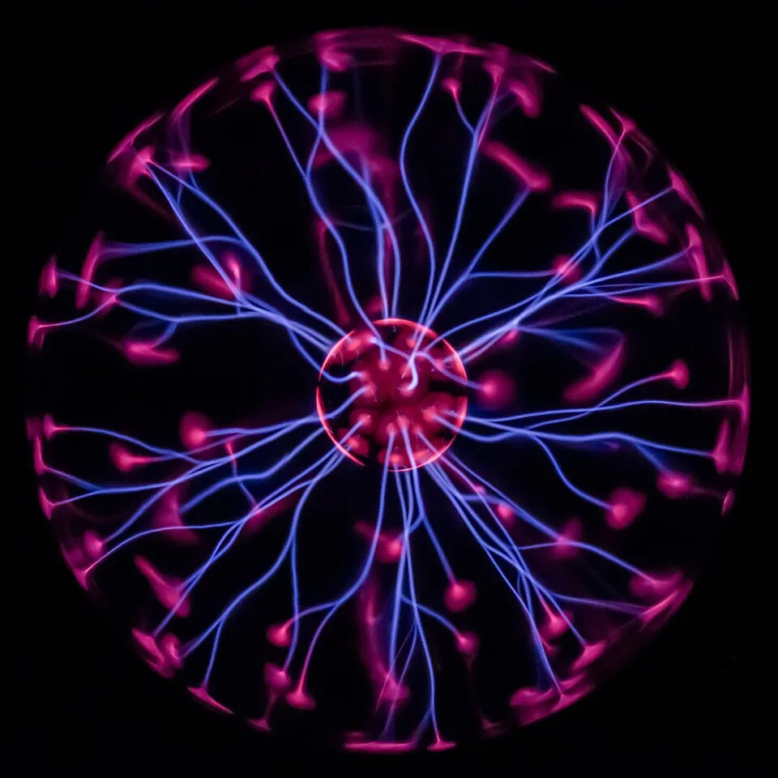
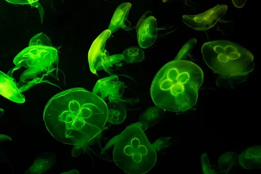
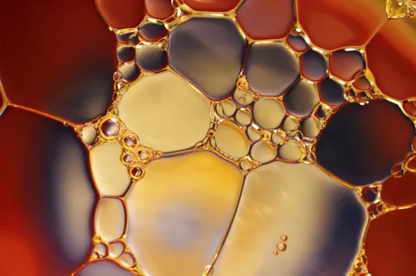
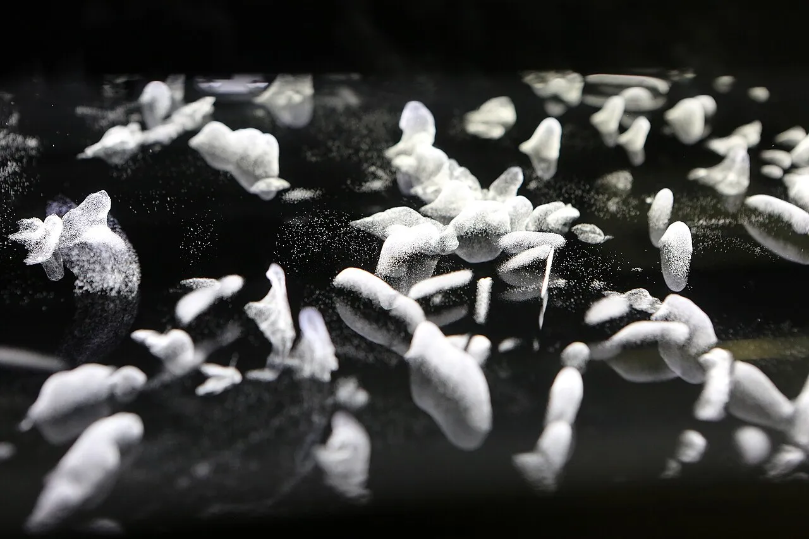
Fascinated by science since I was a child, I fell in love with physics, mineralogy and spiders! For me, science is more than a subject taught at school: it's a method, a way of seeing the world and of considering our relationship with others. There are always new things to discover.
Outreach taught me to see science in a different light, to step into the shoes of different audiences and to ask how best to convey my fascination. It's an exchange during which I learn as much as I share.
I am currently involved in AurorAlpes, an organization dedicated to sharing scientific knowledge.
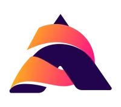
Discover our workshops catalog!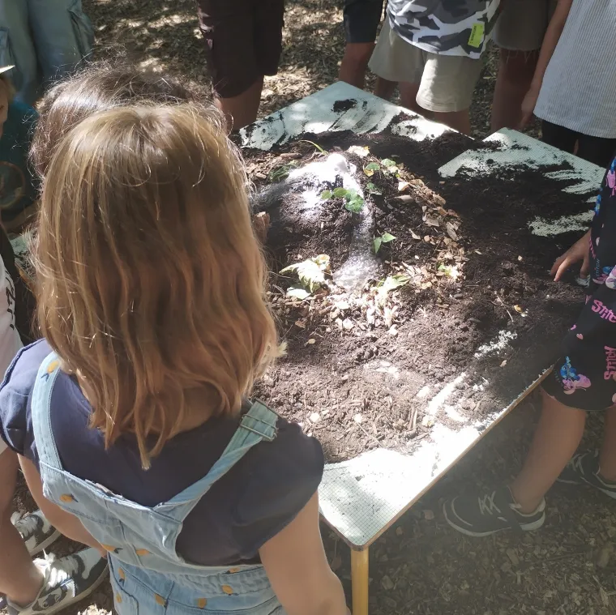
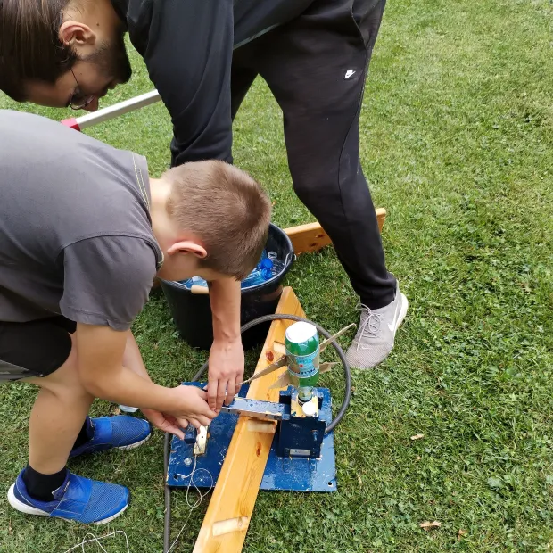
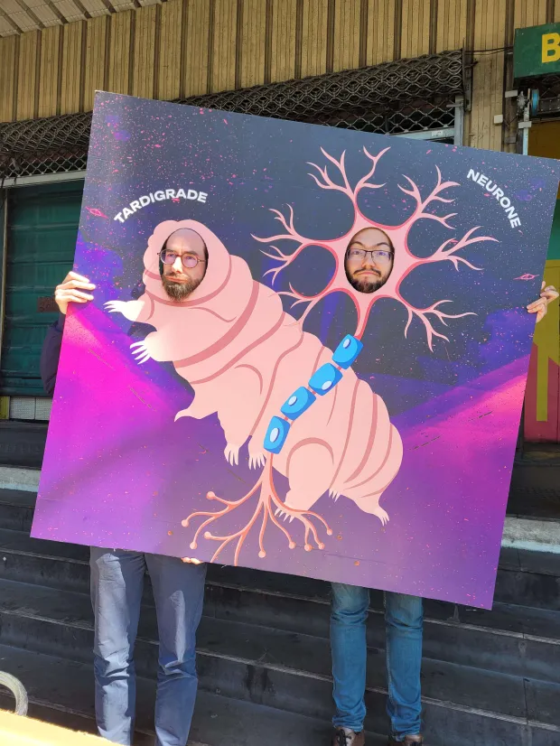
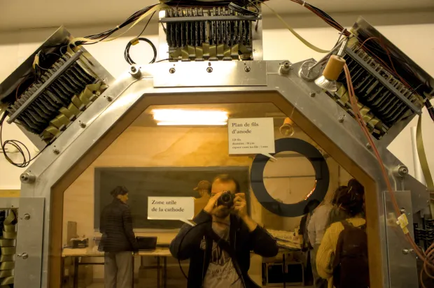
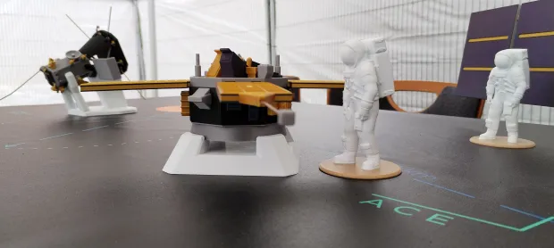
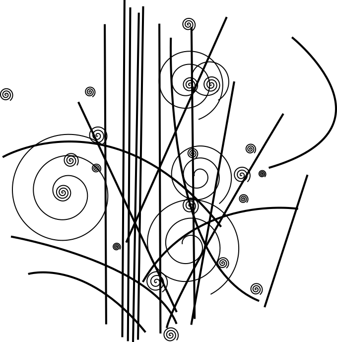
Of all the sciences, particle physics fascinates me most: the study of the elementary constituents of matter and their interactions.
Fun fact: this physics relies on particles called mediator bosons, which transmit the fundamental forces between fermions — a bit like science outreacher who transmit science between scientists and non-scientists!
Voluntary work has always been a big part of my life. Student offices taught me project and team management, but I soon wanted to go further: organizing lab visits, meeting PhD students, writing articles for a webzine. Today I'm involved in science-culture projects across several associations.